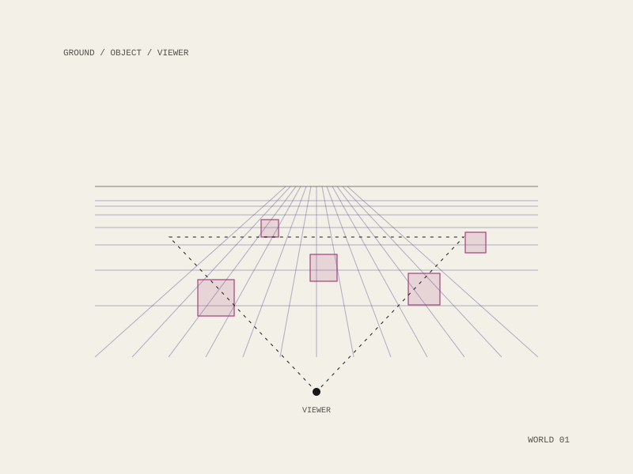

Kokowa
A webVR and 3D publication platform: drop in 3D objects, upload images, add notation, and assemble a world out of ready-made figures and environments, in a browser, with nothing to install.

The problem it took on
In 2016 building anything in VR meant a game engine, a toolchain and a build step, which meant the medium belonged to people who already had those skills. Kokowa put world-building in the browser and made publishing a world about as hard as publishing a page.
WIRED covered it in April 2017 under the observation that it made building bizarro virtual worlds far easier, which is a fair description of both the tool and the point: lower the floor, and what gets made stops looking like a tech demo.
Afterward
The company is no longer active. The problem it named is not solved so much as absorbed, and the same instinct, that a medium is only real once ordinary people can publish into it without a build step, runs through Palimpsest and Sigil Studio, both of which run entirely in a browser with nothing uploaded anywhere.
webVR, in-browser
Seed-funded 2016
No longer active